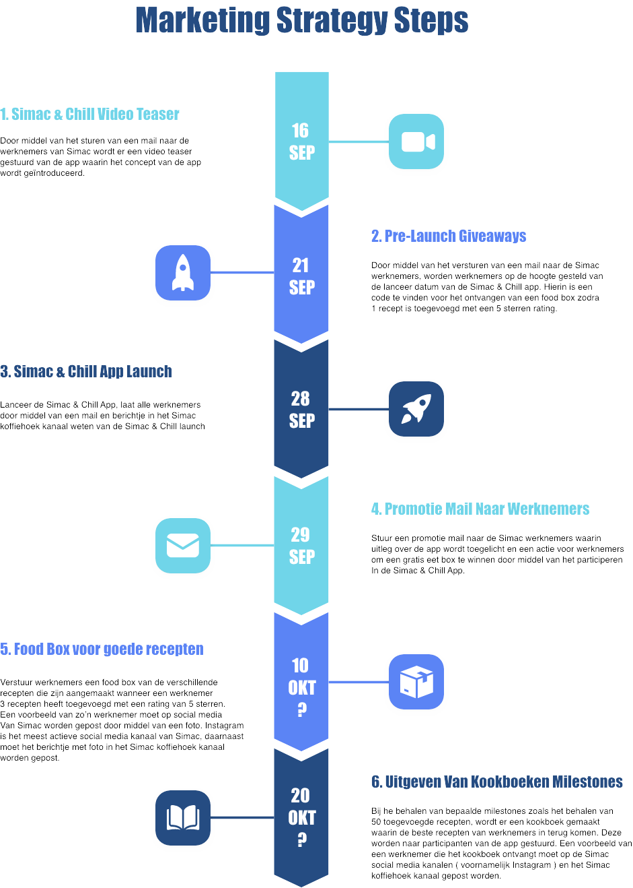
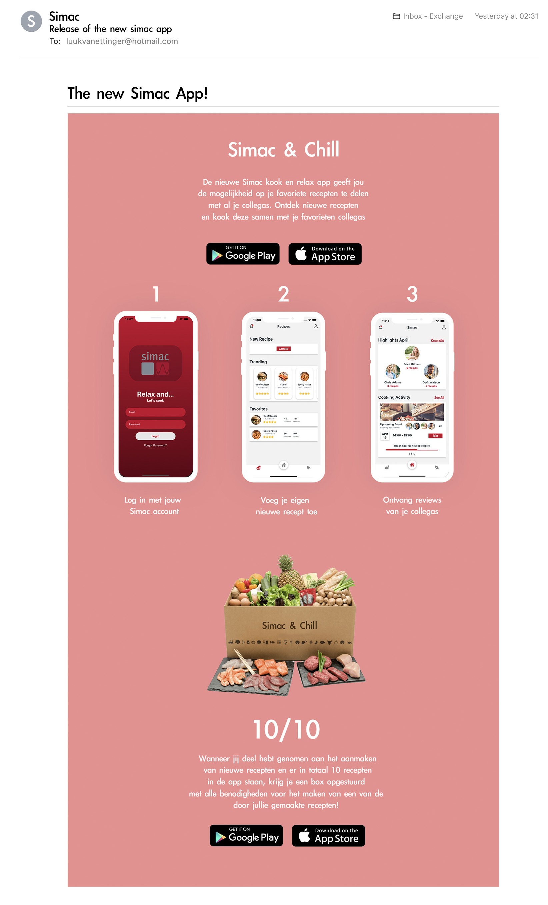

Marketing Strategie
Het opstellen van een marketing strategie is van belang om er voor te zorgen dat de Simac & Chill app bekend raakt bij de doelgroep en werkenemrs van Simac hier vervolgens ook gebruik van gaan maken. Hiervoor heb ik een stappenplan gemaakt waarin verschillende marketing middelen in terug komen.
Het concept is gericht op medewerkers van Simac die beperkt contact hebben met hun collega's en meer willen socializen met hun collega's. De gemiddelde werknemer is tussen de 40 en 55 jaar oud en zijn voornamelijk mannen. De gemiddelde Simac werknemer is ook getrouwd en is samenwonend met familie.
Het doel van het concept is de belangstelling duidelijk maken van saamhorigheid en verbondenheid tussen werknemers en hoe dit bijdraagt aan een verhoging in productiviteit en persoonlijk welzijn.
Door middel van de Simac & Chill App willen wij deze boodschap overbrengen. Om er voor te zorgen dat de app bekend is onder de
Simac werknemers en er zo veel mogelijk downloads en interacties met de app plaatsvinden heb ik een stappenplan opgesteld waarmee
we de Simac werknemers willen bereiken.

{kind=link}
Promotie mail naar werknemers
De promotie mail die naar de werknemers wordt gestuurd in stap 4 heb ik verder uitgewerkt in een ontwerp om dit
strategie middel te visualiseren. Een eerste versie hiervan is hieronder te zien, verder wordt er ook toegelicht hoe er
getoetst kan worden of de promotie mail ook daadwerkelijk effectief is op de doelgroep.

Om te meten of de promotie mail ook daadwerkelijk effectief is op de doelgroep zijn er 3 duidelijke manieren om dit te toetsen.
1. Aantal downloads in de app/play store
Hoeveel werknemers worden door de promotie mail getriggerd om de app te downloaden?
Bij een hoeveelheid van 100+ downloads in de app/play store samen, kan geconcludeerd worden dat de promotie mail succesvol was in het werven van gebruikers.
2. Aantal recepten die worden toegevoegd
Hoeveel werknemers zijn getriggerd een gratis hellofresh box te ontvangen door het maken van een recept?
Bij een hoeveelheid van 50+ aangemaakte recepten kan er geconcludeerd worden dat de promotie mail succesvol was in het motiveren van gebruikers om deel te nemen aan de app door een recept toe te voegen.
3. Activiteit in de app over een langere periode gemeten
Blijven werknemers gebruik maken van de app nadat het concept van app niet meer nieuw voor hen is? Vinden ze de app interessant genoeg om gebruik van te maken? Merken zij de positieve effecten op hun welzijn en saamhorigheid die wij willen overbrengen met de Simac & Chill app?
Bij een hoeveelheid van 70% van alle aangemaakte accounts die na 2 maanden tijd nog gebruik maken van de app kan er geconcludeerd worden dat de Simac & Chill een positief effect heeft op de saamhorigheid en en persoonlijk welzijn van de werknemers.
Er staat een stappenplan klaar dat gebruikt kan worden zodra de app klaar is voor productie. Hiervan werken mijn groepsgenoten en ik alle 1 marketing middel verder uit. Ik heb er voor gekozen om de promotie mail verder uit te werken. Ik zal hier verschillend (gebruikers) onderzoek naar doen om erachter te komen op welke manier de mail ontworpen moet worden om de doelgroep op de juiste manier aan te spreken en er voor te zorgen dat er zo veel mogelijk werknemers worden aangespoord om de app te downloaden en blijven gebruiken.